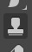

|
Step 1: Intro | Step 2: Brush/Pencil | Step 3: Spot Healing Brush | Step 4: Healing Brush | Step 5:
Patch | Step 6: Content-Aware Move | Step 7: Content Aware Fill | Step 8: Clone
| Step 9: Combining Tools |
| Clone Tool |
Our final tool is a general use tool that can either blend in surrounding pixels or work along a line. We will take a look at how to do both.
The Clone Tool works similar to the Healing Brush Tool in that we begin by defining an area that we wish to clone. We then draw over the unwanted area to replace it with the source area. Yeah, I know, that explanation is not very clear. The truth is that it is kinda hard to explain exactly how this tool works, so let's just use it and you will quickly understand what is going on.
What is going on here is really pretty simple. When you Alt+click a spot while using the Clone Tool to tell Photopea to use that spot as source material. When you begin to color over what you want to remove, you will notice that Photopea places a small + sign on the spot that is using as source material to cover the object you wish to get rid of. While removing the person in red, we are actually making a copy of the building at the location we clicked in direction 6 above.
In this case, the person is easy to remove because using the soft mechanical brush means the edges of where we draw blends in with the existing texture. And since there is a lot going on structurally at that spot, what we drew tends to blend in with the surrounding area and we have a very difficult time figuring out where the person in red was after we zoom out.The Clone Tool is also very capable when it comes to removing objects next to a line (or a building, or a tree, or anything else we don't want to destroy). We simply need to change to a solid brush.
The Clone Tool is only really limited by your ability to find an area within the image that serves as a good source of material to cover up the object you are trying to get rid of. Realistically, we could have used the Clone Tool to remove every person and object in the image we don't want (and there are some designers and photographers who use the Clone Tool exclusively, but doing so would have been very time consuming. The other tools and techniques that we have covered generally make our lives easier by being quicker and easier than the Clone Tool. Still, when one of the other tools does a less than stellar job, the Clone Tool is always available to clean things up. The ability to control the brush shape and size means we can get extremely precise with our work.
As a quick reminder, unlike most of the other tools we have used in this lesson, the Clone Tool does not blend colors together. Instead, it is very simply replacing one area with another. Know that while this keep us from having to worry about two colors blending together, it means that there may be times when we have to manually blend color together. If the the areas we are using are vastly different in color, tone, tint, etc, you will get all kinds of strange results.
Let's save our work up to this point.
In the final Step of this lesson, we will take a look wrapping up our Colosseum image and talk about using what we have learned to edit other image.